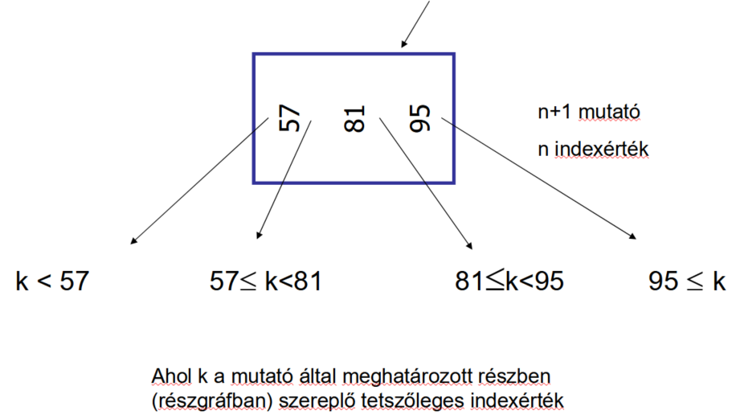
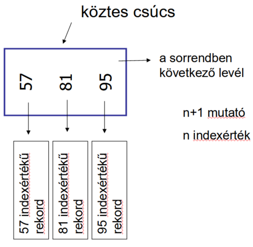
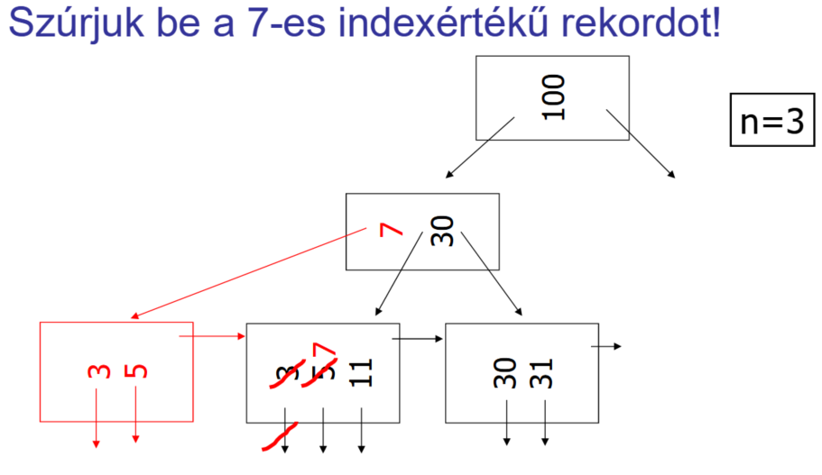
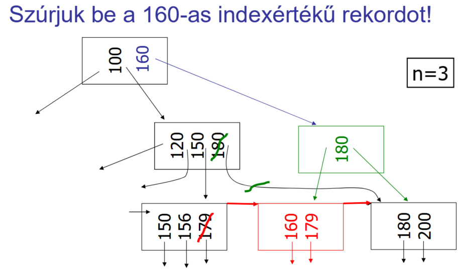
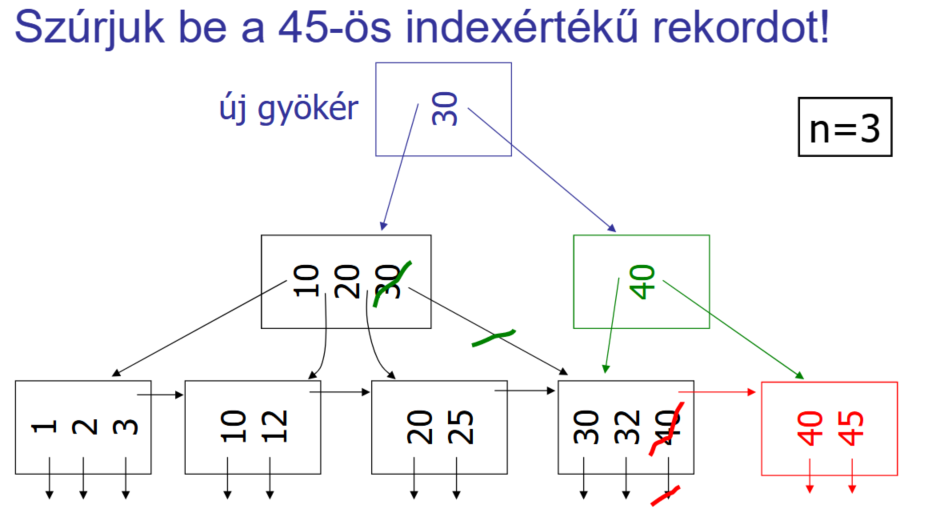
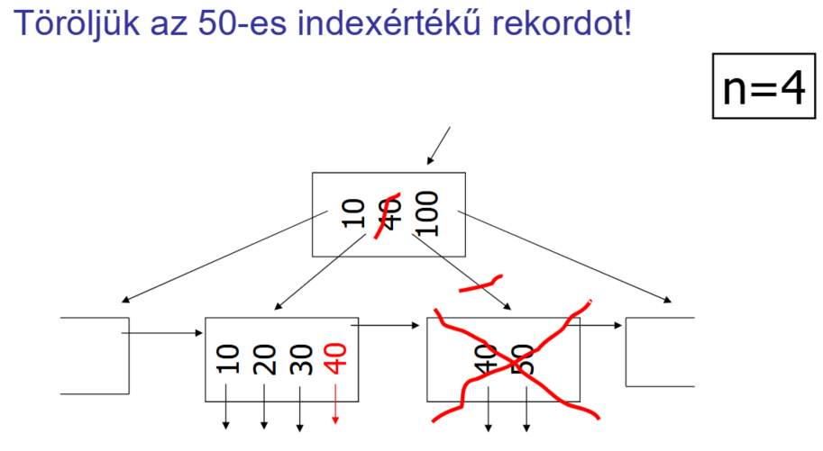
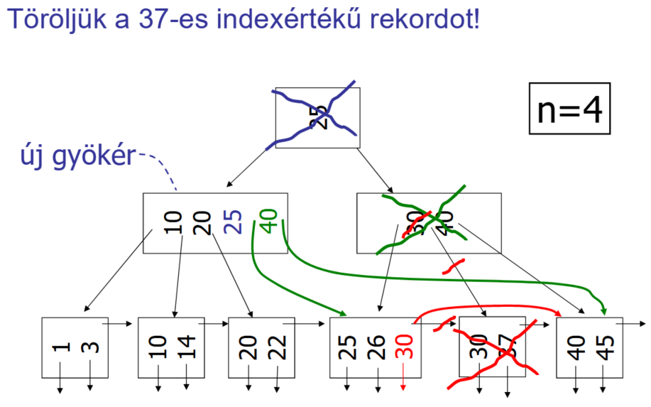
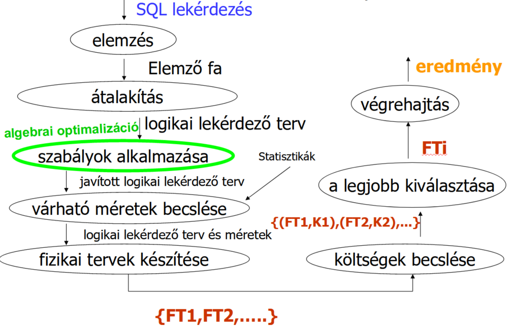
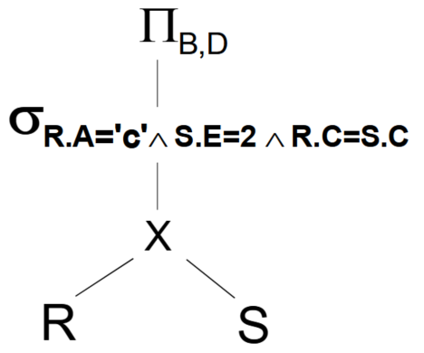
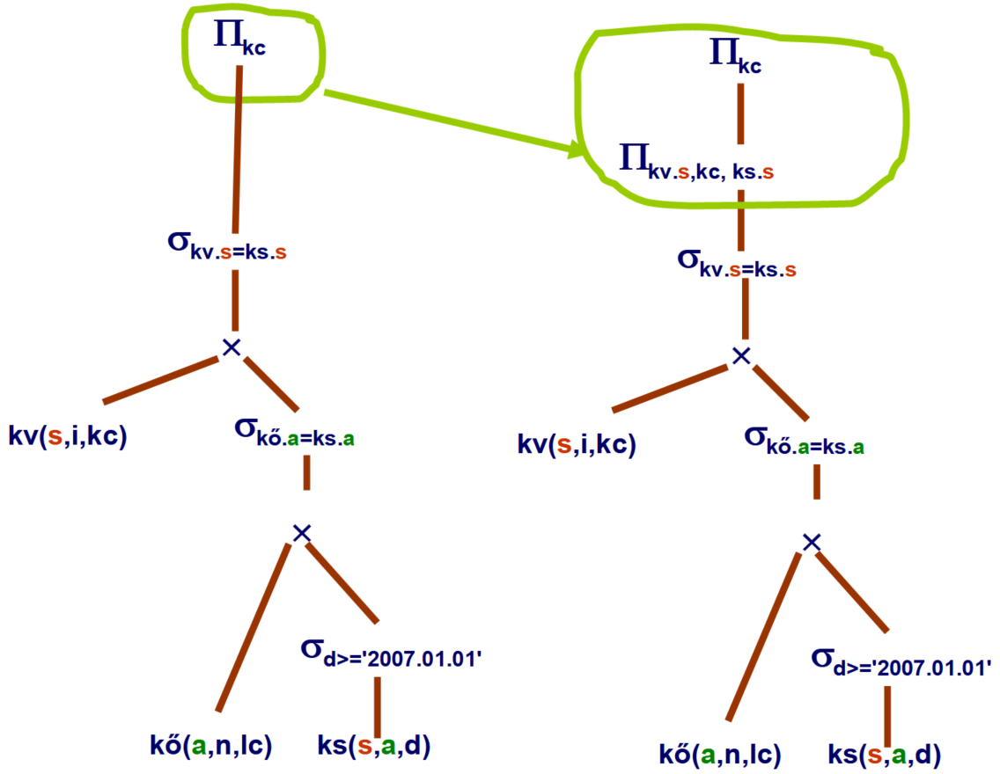

Készült Kiss Attila előadásai alapján.
Sárközi Gergő, 2022-23-1. félév
Nincsen lektorálva!
1. oldal
Statikus: ritkán módosul, a lekérdezések gyorsasága a fontosabb
Dinamikus: gyakran módosul, ritkán végzünk lekérdezéseket
1. oldal
Gyors lekérdezés, gyors adatmódosítás, minél kisebb tárolási méret
1. oldal
Háttértároló és memória között mozgatott blokkok számával
3, 5. oldal
l: length, rekordméret bájtokban
b: blokkméret bájtokban
B: fájl mérete blokkokban
T: tuple, rekordok száma
bf: blokkolási faktor, blokkonként hány rekord fér el, \(bf=\lfloor b/l \rfloor\)
M: memória mérete blokkokban
I(A): képméret, “A” oszlopban szereplő különböző értékek száma
3. oldal
\(B(R \times S) = T(R) * T(S) * (I(R) + I(S)) / b = T(S)*B(R) + T(R)*B(S)\)
4.oldal
Egy \(A=a\) feltételt kielégítő rekordokból nagyjából azonos számú szerepel, a konkrét feltételtől függetlenül.
1. oldal
Egy blokkot.
1. oldal
Operációs rendszer, hardver, adatbázis-kezelő
5. oldal
\(B(\sigma_{A=a}(R)) = B(R) / I(A)\)
5. oldal
kupac (heap), hasító index (hash), rendezett állomány, elsődleges index (ritka index), másodlagos index (sűrű index), többszintű index, \(B^+\)-fa vagy \(B^*\) fa
6. oldal
\(B\) (kupac mérete blokkokban)
6. oldal
Utolsó blokkba tesszük a rekordot, tehát 1 olvasás és 1 írás (azaz 2)
7. oldal
Hogy melyik kosárba tartozik a rekord, amelynek indexmezőjének az értéke \(x\).
7. oldal
Egy jó hasító függvény nagyjából egyenletesen sorolja be a rekordokat különböző kosarakba.
Ilyenkor egy blokklánc \(B/K\) blokkból áll, ahol \(K\) a blokkláncok száma.
8. oldal
Legyen \(K\) a blokkláncok száma.
Ha az indexmező és a keresési mező megegyezik, akkor \(B/K\) (\(B/K\) méretű kupacban keresés).
Ha a kettő eltér, akkor \(B\) (\(B\) méretű kupacban keresés).
8. oldal
Blokkonként sokszor csak 1 rekord lesz tárolva, ami pazarolja a tárhelyet.
8. oldal
Intervallumos \((a < A < b)\) típusú keresésre.
11. oldal
Jelentése: a kosarak száma beszúráskor, törléskor változhat (nincsen előre rögzítve).
Két tanult fajtája: kiterjeszthető (expandable) és lineáris
11. oldal (utolsó bekezdés)
Amelynek prefix kódja a \(h(K)\) kezdő szelete. (Ha egy kosár kódja \(i\) hosszú, akkor \(h(K)\) \(i\) hosszú kezdő szeletével kell megegyeznie a kódnak.)
Ha beszúrásnál nincs szabad hely a megfelelő kosárban, akkor a kosarat kettő osztjuk, a prefix kódjának a hosszát megnövelve eggyel. A meglévő elemeket az új, hosszabb kód alapján a megfelelő új kosárba helyezzük. Ezt a kettőosztást akár többször meg kell ismételni, amíg nem lesz szabad hely.
13. oldal (utolsó bekezdés) és 14. oldal (első bekezdés)
Ha a rekordok hasító értékének eleje sok bitben megegyezik, akkor hosszú (fa) ágak keletkezheznek. A megoldás, hogy a fát egy tömbbel ábrázoljuk. A tömb mérete a kosarak prefix kódjainak hosszának 2-es alapú hatványa (pl. 2 hosszú kód esetén 4 hosszú a tömb). Így a tömb \(h(x)\)-edik eleme megmutatja, hogy melyik kosárba való az adott rekord. Több tömb elem is mutathat ugyan arra a kosárra.
17. oldal
Ha egy előre megadott értéket elér a kosarakra jutó átlagos rekordszám: ha a rekordok száma osztva a kosarak számával átlép egy küszöb értéket.
17. oldal (utolsó 2 bekezdés)
Nézzük \(h(K)\) utolsó \(\log(n)\) bitjét, ahol \(n\) a kosarak száma.
Ha nincs ilyen sorszámú kosár, akkor nézzük azt a kosarat, amelyik sorszáma csak az első bitben tér el.
Ha a kosárban van szabad hely, akkor abba tesszük bele.
Ha nincs szabad hely, akkor a kosárhoz hozzáláncolunk egy új blokkot és abba tesszük bele.
21. oldal (utolsó előtti bekezdés)
21. oldal (utolsó bekezdés)
\(\log_2(B)\)
22. oldal (utolsó előtti bekezdés)
\(\log_2(B-G)+G\) ahol \(G\) a gyűjtő blokkok száma
23. oldal
\(\log_2(2*B)=1+\log_2(B)\)
24. oldal
Az indexrekord egy \((a,p)\) kettes, ahol \(a\) egy érték az indexelt oszlopban és \(p\) egy blokkmutató (arra a blokkra mutat, amelyben az \(A=a\) értékű rekordot tároljuk).
Az indexrekordok mindig rendezetten vannak tárolva az indexérték szerint.
25. oldal (1. bekezdés, 5 bajusz)
25. oldal
Legnagyobb olyan indexérték, amely a keresett értéknél kisebb vagy egyenlő.
25. oldal
\(1+\log_2(B(I))\) ahol \(B(I)\) az indexfájl mérete blokkokban.
33. oldal (1. bekezdés, első 5 bajusz)
33. oldal (2. bekezdés)
Binárist keresést használunk az indexfájlban. A talált indexrekord által mutatott blokkot még be kell olvasnunk, abban van a keresett főfájl rekord.
A keresés költsége: \(1+\log_2(B(I))\) ahol \(B(I)\) az indexfájl mérete blokkokban
A keresés lassabb, mint elsődleges index esetén, mert több indexrekord létezik (\(B(I)\) nagyobb).
45. oldal (2. bekezdés)
Egy tábla klaszterszervezésű az \(A\) oszlopra nézve, ha az \(A\) oszlopban azonos értékű sorok azonos vagy egymás utáni blokkokban helyezkednek el, azaz az első találat után az összes többi található fellelhető soros beolvasással.
45. oldal (3. bekezdés)
Ha egy fájl klaszterszervezésű az \(A\) oszlopra nézve, akkor az \(A\) oszlop indexe egy klaszterindex.
45. oldal (4. bekezdés)
Ha a táblák közös oszlopain egyező sorok egy blokkban vagy egymás utáni blokkokban helyezkednek el, azaz összekapcsolás során az összetartozó sorok fellelhetők soros beolvasással.
47. oldal (piros képlet)
\(\log_2(B(I^{(t)}))+t\), ahol \(B(I^{(t)})\) a \(t\)-edik szinten található blokkok száma. Ha ezen a szinten csak 1 blokk van, akkor a keresési költség \(t+1\).
47. oldal (2. bekezdés, 1. pont)
Bináris (logaritmikus) keresést.
47. oldal (2. bekezdés, 3. pont)
\(t+1\)
47. oldal (2. bekezdés, 4. pont)
Minden szintnek azonos a blokkolási faktora (\(bf(I)\)), mert az indexrekordok hossza megegyezik. (Az indexrekordok egy \(A\) oszlop értéket és egy blokkmutatót tárolnak. Ezek nem függnek a \(t\) értékétől.)
48. oldal (táblázat)
A legfelső szint \(B/bf(I)^t\) blokkból áll, mert a blokkok száma minden szinten ahányad részére csökken, amennyi indexrekord fér egy blokkba (\(bf(I)\)).
A főfájl \(B\) blokkból áll, az első szint \(B/bf(I)\) blokkból, a második szint \(B/bf(I)/bf(I)=B/bf(I)^2\) blokkból, stb.
Az indexfájlok rendezettek, ezért lehet őket elsődleges index-szel indexelni, ami ritka, azaz blokkonként elég egy indexrekord. Ezért kell minden lépésben \(bf(I)\)-vel osztani.
Minden szintnek azonos a blokkolási faktora (\(bf(I)\)), mert az indexrekordok hossza megegyezik. A rekordok száma szintén \(bf(I)\) hányad részére csökken szintenként: főfájlban \(T\) rekord van, 1. szinten \(B\), t-edik szinten \(B/bf(I)^{t-1}\).
48. oldal (táblázat alatti 1 pont)
Az egyenlet: \(1=B/bf(I)^t\)
Megoldás: \(t=\log_{bf(I)}(B)\)
49. oldal (telítettségre és algoritmusokra utaló mondatok)
Többszintű indexelés egy megvalósítása. Egy adott szerkezetű fa, amelyben minden blokk legalább 50%-ban telített. Ezt a telítettséget és a szerkezetet karbantartó algoritmusok biztosítják.
50. oldal (minden, ami szerepel rajta)
\(n\) darab indexértéket és \(n+1\) darab mutatót tartalmaz. Erre a köztes csúcsra mutat egy másik belső csúcs.
Legyen \(k\) egy tetszőleges indexérték egy adott mutató által meghatározott részgráfban.
Legbaloldalibb mutató: \(k < \text{első indexérték}\)
Középső mutatók: \(\text{előző indexérték} \le k < \text{következő indexérték}\)
Legjobboldalibb mutató: \(\text{utolsó indexérték} \le k\)
(Ahhoz, hogy ez egy példa legyen konkrét számokat be kéne helyettesíteni. Rajzolni valószínűleg jó ötlet.)

51. oldal (minden, ami szerepel rajta)
\(n\) darab indexértéket és \(n+1\) darab mutatót tartalmaz, ahol a +1 mutató sorrendben a következő levélre mutat. Levél csúcsokra egy belső csúcs is mutat.
A többi mutató az indexértékkel megegyező tartalmú rekordra (nem pedig blokkra!) mutat. (Ahhoz, hogy ez egy példa legyen konkrét számokat be kéne helyettesíteni. Rajzolni valószínűleg jó ötlet.)

53. oldal (mit szúrunk be és a beszúrás előtti, majd utáni két fát kell lerajzolni)

54. oldal (mit szúrunk be és a beszúrás előtti, majd utáni két fát kell lerajzolni)

55. oldal (mit szúrunk be és a beszúrás előtti, majd utáni két fát kell lerajzolni)

56. oldal (mit törlünk és a törlés előtti, majd utáni két fát kell lerajzolni)

58. oldal (mit törlünk és a törlés előtti, majd utáni két fát kell lerajzolni)

33. oldal (a tábla, és a régióra készített index)
Adatok:
| ID | Név | Régió |
|---|---|---|
| 101 | John Smith | east |
| 102 | Robert Williams | central |
| 103 | Mary Brown | west |
| 104 | Susan Miller | central |
Bitmap a ‘Régió’ oszlopra:
| Régió=‘east’ | Régió=‘central’ | Régió=‘west’ |
|---|---|---|
| 1 | 0 | 0 |
| 0 | 1 | 0 |
| 0 | 0 | 1 |
| 0 | 1 | 0 |
34. oldal (a lekérdezés, a vektorműveletek, és a lekérdezés eredménye: az utolsó vektorban az egyesek száma)
Lekérdezés: SELECT COUNT(*) FROM CUSTOMER WHERE STATUS='married' AND REGION IN ('central', 'west');
| status = ‘married’ | AND | region = ‘central’ | OR | region = ‘west’ | = | status | AND | region | = | Eredmény |
|---|---|---|---|---|---|---|---|---|---|---|
| 0 | 0 | 0 | 0 | 0 | 0 | |||||
| 1 | AND | 1 | OR | 0 | = | 1 | AND | 1 | = | 1 |
| 1 | 0 | 1 | 1 | 1 | 1 | |||||
| 0 | 0 | 1 | 0 | 1 | 0 |
Az eredmény az utolsó oszlopban az egyesek száma.
91. oldal (A cél pontos megfogalmazása.)
A cél a lekérdezések gyorsabbá tétele a táblakra vonatkozó paraméterek, statisztikák, indexek ismeretében és általános érvényű tuladonságok, heurisztikák segítségével.
100. oldal (A folyamatábrán szereplő csúcsok, feliratok mindegyike 1 pont)

95. oldal (A kifejezés és a gráf)
A \(\Pi_{B,D}( \sigma_{R.A='c' \wedge S.E=2 \wedge R.C = S.C} (R \times S) )\) kifejezés gráfként:

106. oldal (Költségmodell)
A kiszámítás költsége arányos a relációs algebrai kifejezés részkifejezéseinek megfelelő relációk tárolási méreteinek összegével.
106. oldal (Módszer)
Műveletei tulajdonságokon alapuló ekvivalens átalakítások alkalmazása, hogy várhatóan kisebb méretű relációk keletkezzenek.
106. oldal (4. pont)
Mert az eljárás nem az argumentum relációk valódi méreteivel számol.
106. oldal (4. pont)
Mert az átalakítások sorrendje nem determinisztikus, így más sorrendben végrehajtva az átalakításokat más végeredményt kaphatunk. Mindegyik végeredmény általában jobb költségű, mint amiből kiindultunk.
107. oldal (unáris csúcsok felsorolása)
Unáris csúcsok: \(\sigma ,\; \Pi ,\; \rho\) (szelekció, projekció, átnevezés)
107. oldal (bináris csúcsok felsorolása)
Bináris csúcsok: \(- ,\; \cup ,\; \times\) (kivonás, unió, összekapcsolás)
107. oldal (kétféle lehet)
Levél csúcsok: konstans relációk vagy relációs változók
110. oldal (1. pont)
Két kifejezés ekvivalens, ha tetszőleges relációk esetén azonos eredményeket adnak.
\(E_1(r_1,...,r_k)\) és \(E_2(r_1,...,r_k)\) ekvivalensek (\(E_1 \cong E_2\)), ha tetszőleges \(r_1, ..., r_k\) relációk esetén \(E_1(r_1,...,r_k) = E_2(r_1,...,r_k)\).
110. oldal (2. és 3. pont, összesen 4 mondat)
11 szabályt (szabálycsoportot) adunk meg. A szabályok kifejezések ekvivalenciáját kimondó bizonyítható állítások.
Az állítások egy részében a kifejezések szintaktikus helyessége egyben elégséges feltétele is az ekvivalenciának.
110. oldal (3 szabály)
1.: Kommutativitás: \(E_1 \oplus E_2 \cong E_2 \oplus E_1\) ahol \(\oplus \in \{\times, \bowtie, \bowtie_F \}\)
111. oldal (3 szabály)
2.: Asszociativitás: \((E_1 \oplus E_2) \oplus E_3 \cong E_1 \oplus (E_2 \oplus E_3)\) ahol \(\oplus \in \{\times, \bowtie, \bowtie_F\}\)
111. oldal (szabály és feltétel)
3.: Vetítések összevonása, bővítése: \(\Pi_A(\Pi_B(E)) \cong \Pi_A(E)\) ha \(A \subseteq B\)
111. oldal (2 ekvivalencia és feltétel)
4.: Kiválasztások felcserélhetősége, felbontása: \(\sigma_{F1 \wedge F2}(E) \cong \sigma_{F1}(\sigma_{F2}(E)) \cong \sigma_{F2}(\sigma_{F1}(E))\)
112. oldal (az a) szabály és feltétele)
5.: Kiválasztás és vetítés felcserélhetősége: \(\Pi_A(\sigma_F(E)) \cong \sigma_F(\Pi_A(E))\) ahol \(F\) csak az \(A\) oszlopokat nézi
112. oldal (a b) szabály és feltétele)
5.: Kiválasztás és vetítés felcserélhetősége, általánosabban: \(\Pi_A(\sigma_F(E)) \cong \Pi_A(\sigma_F(\Pi_{A \cup B}(E)))\) ahol \(F\) az \(A \cup B\) oszlopokat nézi és \(A \cap B = \emptyset\) (azaz \(B\)-t \(F\) alapján határozzuk meg)
112. oldal (a szabály és feltétele)
6.: Kiválasztás és szorzás felcserélhetősége: \(\sigma_F(E_1 \times E_2) \cong \sigma_F(E_1) \times E_2\) ahol \(F\) csak \(E_1\)-et használja
112. oldal (a speciális szabály és feltétele)
6.: Kiválasztás és szorzás felcserélhetősége, speciálisan: \(\sigma_F(E_1 \times E_2) \cong \sigma_{F1}(E_1) \times \sigma_{F2}(E_2)\) ahol \(F=F1 \wedge F2\) és \(Fi\) csak \(E_i\)-t ellenőrzi
112. oldal (az általános szabály és feltételei)
6.: Kiválasztás és szorzás felcserélhetősége, általánosabban: \(\sigma_F(E_1 \times E_2) \cong \sigma_{F2}(\sigma_{F1}(E_1) \times E_2)\) ahol \(F=F1 \wedge F2\) és \(F1\) csak \(E_1\)-et, de \(F2\) \(E_1 \times E_2\)-t nézi
113. oldal (a szabály és feltétele)
7.: Kiválasztás és egyesítés felcserélhetősége: \(\sigma_F(E_1 \cup E_2) \cong \sigma_F(E_1) \cup \sigma_F(E_2)\) ahol \(E_i\) azonos sémájú
113. oldal (de ez nem volt az eredeti kérdéssorban)
8.: Kiválasztás és kivonás felcserélhetősége: \(\sigma_F(E_1 - E_2) \cong \sigma_F(E_1) - \sigma_F(E_2)\) ahol \(E_i\) azonos sémájú
113. oldal (a szabály és feltétele)
9.: Kiválasztás és természetes összekapcsolás felcserélhetősége: \(\sigma_F(E_1 \bowtie E_2) \cong \sigma_F(E_1) \bowtie \sigma_F(E_2)\) ahol \(F\) az \(E_i\) közös oszlopain értelmezett
114. oldal (a szabály és feltétele)
10.: Vetítés és szorzás felcserélhetősége: \(\Pi_A(E_1 \times E_2) \cong \Pi_{A1}(E_1) \times \Pi_{A2}(E_2)\) ahol \(A=A_1 \cup A_2\) és \(A_i\) az \(E_i\) oszlopainak részhalmaza
114. oldal (a szabály és feltétele)
11.: Vetítés és egyesítés felcserélhetősége: \(\Pi_A(E_1 \cup E_2) \cong \Pi_{A}(E_1) \cup \Pi_{A}(E_2)\) ahol \(E_i\) sémája azonos és \(A\) az oszlopaik egy részhalmaza
114. oldal (a megjegyzésben leírt példa)
Példa \(\Pi_A (E_1 - E_2) \ncong \Pi_A (E_1) - \Pi_A (E_2)\) bizonyítására:
Legyen \(E_1 = [ \{A=0, B=0\}, \{A=0, B=1\} ]\) és \(E_2 = [ \{A=0, B=0\} ]\)
Ekkor \(\Pi_A(E_1 - E_2) = [ \{A=0\} ]\) de \(\Pi_A(E_1) - \Pi_A(E_2) = \emptyset\)
115. oldal (Vastagon szedett mondatok)
115. oldal (1. pont)
Hogy a részkifejezések várhatóan kisebb relációk legyenek.
115. oldal (2. pont)
Mert az összekapcsolás hatékonyabban kiszámolható, mint a szorzatból történő kiválasztás.
115. oldal (3. pont)
Mert így csökken a műveletek száma, és általában a kiválasztás kisebb relációt eredményez, mint a vetítés.
115. oldal (4. pont)
Mert így elég őket csak egyszer kiszámolni a kifejezés kiértékelése során.
116. oldal (input, output)
Input: relációs algebrai kifejezés kifejezésfája
Output: optimilizált kifejezésfa optimilizált kiértékelése
116. oldal (1. lépés)
Kiválasztások felbontása.
116. oldal (2. lépés)
Kiválasztások olyan mélyre vitele a kifejezésfában, amilyen mélyre csak lehetséges.
116. oldal (3. lépés)
Vetítések olyan mélyre vitele a kifejezésfában, amilyen mélyre csak lehet.
Olyan vetítések elhagyása, amik a reláció összes attribútumára vetítenek (triviális vetítések).
116. oldal (4. lépés)
Közvetlenül egymás utáni kiválasztások vagy vetítések összevonása egy kiválasztássá vagy egy vetítéssé vagy egy kiválasztás utáni vetíttéssé, ha lehet.
116. oldal (5. lépés)
Gráf bináris műveletek (\(\cup ,\; - ,\; \times\)) alapján részgráfokra bontása. Egy részgráfhoz tartozik még a bináris műveleten végrehajtott kiválasztások és vetítések.
Ha a bináris művelet \(\times\) és valamelyik argumentumban nincsen bináris művelet és a művelet részfája equi-joinnak felel meg, akkor az argumentum részfájával egyesíthető a művelet részfája.
116. oldal (6. lépés)
Az előző lépésben kapott fa alulról felfelé haladó kiértékelése (tetszőleges sorrendben).
122. oldal (a teljes ábra)
Ezzel a trükkel a bővített vetítést lejebb vihetjük a kifejezfában, mint az erdeti vetítést lehetne. Ezzel kisebb részeredményeket kaphatunk a kiértékelés során, azaz optimálisabb megoldáshoz juthatunk.

11. oldal
\(SC(A,R) = 1\)
11. oldal
\(SC(A,R) = N_R / V(A,R)\) ahol \(N_R\) az \(R\) reláció rekordjainak száma és \(V(A,R)\) az \(A\) mező különböző értékeinek száma \(R\)-ben
13. oldal (bináris átlagos költség, m-re a képlet)
\(\lceil \log_2 B_R \rceil + m\) ahol \(m = \lceil SC(A,R) / F_R \rceil - 1\)
\(m\) adja meg, hogy hány további blokkot kell még megnézni, hogy minden találat meglegyen.
\(B_R\) jelentése: \(R\) reláció tárolásához szükséges blokkok száma
\(SC(A,R)\) jelentése: átlagosan hány \(A=a\) mező van \(R\)-ben
\(F_R\) jelentése: blokkolási tényező, \(R\)-ben egy blokkon hány rekord található
13. oldal (a legutolsó pont)
\(HT_i + \lceil SC(A,R)/F_R \rceil\)
\(HT_i\) jelentése: \(i\) index szintjeinek száma
\(SC(A,R)\) jelentése: átlagosan hány \(A=a\) mező van \(R\)-ben
\(F_R\) jelentése: blokkolási tényező, \(R\)-ben egy blokkon hány rekord található
14. oldal (a szelektivitást tartalmazó képlet)
\(HT_i + \lceil SC(A,R) \rceil\)
\(HT_i\) jelentése: \(i\) index szintjeinek száma
\(SC(A,R)\) jelentése: átlagosan hány \(A=a\) mező van \(R\)-ben
15. oldal, 1. bajusz és 2. pötty, 2. bajusz és első három pötty
15. oldal, a diszjunkciós kiválasztás alatti 3 sor
16. oldal, az 5 bajusz
rendezés, unió, metszet, \(\Pi\) (vetítésnél a duplikált értékek kiszűrése)
17. oldal, 3.1. 3.2
Belső és külső rendezés. Belső rendezés akkor használható, ha a rekordok egyszerre beleférnek a memóriába.
18. oldal, első sor
Rendezett futamok létrehozására. Egy futam egy \(M\) hosszú \(R_i\) fájl, ahol \(M\) a memória mérete blokkokban.
19. oldal, első sor
Rendezett futamok összefésülésére. Több rendezett fájlból (futamból) készítünk egy rendezett fájlt.
20. oldal, 2. pont, de a betűk magyarázata is kell
Ha a futamok száma (\(N\)) meghaladja a memória méretét blokkokban kifejezve (\(M\)). Azaz ha nem tudunk minden fájlhoz egy-egy külön memóriablokkot fenntartani, mert nincs elég memória. (A futam egy rendezett fájl; ezeket kell összefésülni.)
Valójában \(N \ge M\) esetén is erre van szükség, de ha így van az előadás dián…
22. oldal, 2. pont, de a betűk magyarázata is kell
\(2*B_R\), azaz a rendezendő reláció blokkokban kifejezett méretének kétszerese.
22. oldal, 3.1. pont, de a betűk magyarázata is kell
\(\lceil B_R / M \rceil\) darab futam van kezdetben, azaz a rendezendő reláció méretét elosztjuk a memória méretével és felfelé kerekítjük.
22. oldal, 3.3. pont, de a betűk magyarázata is kell
\(\lceil \log_{M-1} ( B_R / M ) \rceil\) menetre van szükség, ahol \(M\) a memória mérete, \(B_R\) pedig a rendezendő reláció mérete, mindkettő blokkokban értendő. Magyarázat: minden menet \(M-1\) futamot rendez, ezért minden menetben \(M-1\)-ed részére csökken a rendezendő futamok száma.
22. oldal, 3.4. pont, de a betűk magyarázata is kell
Hivatalos jegyzet:
Minden menetben \(2*B_R\) blokkot olvasunk, ahol \(B_R\) a rendezendő reláció mérete blokkokban kifejezve.
Szerintem erre gondolt inkább:
Minden menetben \(B_R\) blokkot olvasunk és \(B_R\) blokkot írunk, így egy menet költsége \(2*B_R\) (ahol \(B_R\) a rendezendő reláció mérete blokkokban kifejezve). Az utolsó írás az kivétel, azt nem számoljuk bele a költségbe. \(B_R\) pedig valójában csak egy felső becslés (amit az utolsó menetben el is érünk).
22. oldal, 3.4. pont, de a betűk magyarázata is kell
\(2*B_R + 2*B_R * \lceil \log_{M-1} (B_R / M) \rceil - B_R\) ahol \(B_R\) a rendezendő reláció mérete, \(M\) pedig a memória mérete, mindkettő blokkokban kifejezve
23. oldal, 4. pont
Kezdeti átnézés (felesleges mezők törlése), rendezés, végső átnézés (duplikáltak törlése, amik most már szomszédosak)
24. oldal, 2. pont
25. oldal, 1.1 pont mindhárom sora
A legjobb eset akkor lép fel, ha a (kisebb) reláció elfér a memóriában. Ekkor legyen ez a belső reláció. A költség: \(B_R + B_S\) (ahol \(B_X\) az \(X\) reláció méretét jelenti blokkokban kifejezve)
25. oldal, 1.2 pont mindhárom sora
A legroszabb eset akkor lép fel, ha mindkettő relációból csak 1-1 lap fér bele a memóriába. Ekkor minden (\(R\)-beli) rekordhoz végig kell olvasni a másik reláció (\(S\)) összes blokkját, így a költség: \(N_R * B_S + B_R\) (ahol \(B_X\) az \(X\) reláció méretét jelenti blokkokban kifejezve, \(N_R\) pedig az \(R\) relációban található rekordok számát)
28. oldal, 1.1 pont mindhárom sora
A legjobb eset akkor lép fel, ha a (kisebb) reláció elfér a memóriában. Ekkor legyen ez a belső reláció. A költség: \(B_R + B_S\) (ahol \(B_X\) az \(X\) reláció méretét jelenti blokkokban kifejezve)
28. oldal, 1.2 pont mindhárom sora
A legroszabb eset akkor lép fel, ha mindkettő relációból csak 1-1 lap fér bele a memóriába. Ekkor minden (\(R\)-beli) blokkhoz végig kell olvasni a másik reláció (\(S\)) összes blokkját, így a költség: \(B_R * B_S + B_R\) (ahol \(B_X\) az \(X\) reláció méretét jelenti blokkokban kifejezve)
29. oldal, 4. pont mindhárom sora
Legyen \(c\) a belső relációból index szerinti kiválasztás költsége, továbbá legyen a kevesebb rekordot tartalmazó reláció a külső reláció (\(R\)). Ekkor a költség: \(B_R + N_R * c\) (ahol \(B_R\) az \(R\) reláció mérete blokkokban kifejezve, \(N_R\) pedig az \(R\) relációban található rekordok száma)
30. oldal, 5. pont
A költség: \(\text{rendezés költsége} + B_S + B_R\) (ahol \(B_X\) az \(X\) reláció mérete blokkokban kifejezve)
31. oldal, 4. pont
A költség: \(2*(B_R + B_S) + (B_R+B_S)\) (ahol \(B_X\) az \(X\) reláció mérete blokkokban kifejezve)
31. oldal, 2. pont első sora
Ami állítólag a válasz, de a kérdésre nem válaszol:
Alkalmazzuk \(h_1\)-et (hash függvény) az összekapcsolási mezőre és felosztjuk a rekordokat memóriában elférő részekre.
A választ esetleg a kosarak számának függvényében lehetne megadni, de akkor is kérdéses, hogy mennyi konstans extra memóriára van szükség. A kosarak száma pedig nem triviális és egy hash függvény nem ad garanciát arra, hogy egy fix méretű kosárba bele fog férni minden szükséges rekord.
40. oldal, 1. pont
\(SC(A,R)\), azaz annyi, ahány \(A=a\) mező van \(R\)-ben átlagosan. Ha \(A\) kulcs, akkor \(SC(A,R)=1\), egyébként \(SC(A,R)=N_R/V(A,R)\) (ahol \(N_R\) a rekordok száma, \(V(A,R)\) pedig az \(A\) mező különböző értékeinek száma).
40. oldal, 2. pont
\(N_R * \frac{v-\min(A,R)}{\max(A,R)-\min(A,R)}\) ahol \(N_R\) a rekordok száma, \(\min\) és \(\max\) pedig az adott mező minimális/maximális előforduló értéke.
40. oldal, 3. pont
\(N_R * (\frac{s_1}{N_R} * ... * \frac{s_n}{N_R})\) ahol \(s_i\) (\(\theta_i\) szelektivitása) a rekordok száma, amik \(\theta_i\)-t kielégítik (valószínűségi alapon), \(N_R\) pedig a relációban lévő rekordok száma.
40. oldal, 4. pont, 2. sor
\(N_R * (1-[(1-\frac{s_1}{N_R}) * ... * (1-\frac{s_n}{N_R})])\) ahol \(s_i\) (\(\theta_i\) szelektivitása) a rekordok száma, amik \(\theta_i\)-t kielégítik (valószínűségi alapon), \(N_R\) pedig a relációban lévő rekordok száma.
41. oldal, 1. pont
\(N_R * N_S\), ahol \(N_X\) az \(X\) relációban található rekordok számát adja meg
41. oldal, 2.1.
\(N_R * N_S\), ahol \(N_X\) az \(X\) relációban található rekordok számát adja meg
41. oldal, 2.2.
\(N_S\), azaz az \(S\) reláció sorainak száma
41. oldal, 2.3.
\(N_S\), azaz az \(S\) reláció sorainak száma
41. oldal, 2.4.
\(N_R * N_S / V(A,S)\), ahol \(N_X\) az \(X\) reláció sorainak számát, \(V(A,S)\) pedig az \(A\) mező különböző értékeinek számát (\(S\)-ben) adja meg.
Felső becsléshez \(R\) és \(S\) fordítva is behelyettesíthető és a két eredmény maximumát lehet venni.
9. oldal, 1.2 két sora
Legyen \(T(n)\) az \(n\) tagú kifejezés lehetséges zárójelezéseinek száma.
\(T(1) = 1\)
\(T(n) = \sum_{i=1}^{n-1} T(i) * T(n-i)\)
9. oldal, T(n)n!, ahol T(n) az n elem szabályos zárójelezéseinek száma
\(T(n) * n!\) darab, ahol \(T(n)\) az \(n\) tagú kifejezés lehetséges zárójelezéseinek száma.
13. oldal, 2. pont
Egy \(n-1\) tagú összekapcsolás eredményéhez hozzákapcsoljuk az \(n\)-edik tagok. Az \(n\) lehetséges kombináció közül a legkisebb költségűt választjuk.
BestPlan(A,B,C,D,E) = min of (
BestPlan(A,B,C,D) |X| E,
BestPlan(A,B,C,E) |X| D,
BestPlan(A,B,D,E) |X| C,
BestPlan(A,C,D,E) |X| B,
BestPlan(B,C,D,E) |X| A
)20. oldal, cím és nyíl
Az algoritmus neve “Selinger algoritmus” és a kiértékelés lentről (egyedül álló relációk szintjéről) felfelé halad (egyre több darab reláció van összekapcsolva).
Q(A,B) JOIN R(B,C) JOIN S(C,D) lekérdezésnek melyik három kiértékelését hasonlítottuk össze, és melyik volt a legjobb ezek közül? (4 pont)1. oldal a, b, c.c, volt a legjobb.
Q(A,B) JOIN R(B,C) JOIN S(C,D) lekérdezésnek három kiértékelésénél milyen indexeket tételeztünk fel? (2 pont)1. oldal 2. sor
Létezik Q.B-re és S.C-re klaszterindex.
R(A,B) JOIN S(B,C) lekérdezés eredményében mennyi a sorok száma? (2 pont)1. oldal 2) képlet
\(T_{R \bowtie S} = T_R * T_S / I\), ahol \(T\) a sorok számát, \(I\) pedig az \(S.B\) oszlopon előforduló különböző értékek számát jelöli.
R(A,B) JOIN S(B,C) lekérdezés eredménye hány blokkból áll? (2 pont)1. oldal 3) képlet
\((T_R * B_S + T_S * B_R) / I\), ahol \(T\) a sorok számát, \(B\) a reláció méretét blokkokban, \(I\) pedig az \(S.B\) oszlopon előforduló különböző értékek számát jelöli.
Megjegyzés: \(R \times S\) esetén a válasz \(T_R * B_S + T_S * B_R\) lenne.
Q(A,B) JOIN R(B,C) JOIN S(C,D) lekérdezésnek balról jobbra (a) kiértékelésénél milyen költségek összege lesz a teljes költség, és mennyi a teljes költség? (5 pont)2. oldal a) a teljes JOIN I/O költsége: négy sora és a) végeredménye
Első join költsége: \(B + T*B/I\)
Első join kiírása: \(2*T*B/I\)
Második join költsége: \(2*T*B/I + [(T^2/I)*B]/I\)
Második join kiírása: \(3*T^2*B/I^2\)
Teljes költség (előzőek összeadva): \(B+5*T*B/I+4*T^2*B/I^2\)
Q(A,B) JOIN R(B,C) JOIN S(C,D) lekérdezésnek balról jobbra (b) kiértékelésénél mennyit lehet megspórolni és mennyi a teljes költség? (5 pont)2. oldal ab) magyarázatában szereplő képlet és b) végeredménye
Megspórolhatjuk az első join eredményének kiírását majd újboli beolvasását (\(2 * (2*T*B/I)\)).
Teljes költség: \(B + T*B/I + 4*T^2*B/I^2\)
Q(A,B) JOIN R(B,C) JOIN S(C,D) lekérdezésnek c) kiértékelésénél (középső ténytáblához indexek alapján kapcsoljuk a dimenziótáblákat) milyen költségek összege lesz a teljes költség, és mennyi a teljes költség? (4 pont)2. oldal c) három képlete és c) végeredménye
Q beolvasása: \(B\)
Q és S olvasása \(R\) minden sorára: \(T * (B/I + B/I)\)
Eredmény kiírása: \(3 * T^2 * B/I^2\)
Teljes költség: \(B + 2*T*B/I + 3*T^2*B/I^2\)
Q(A,B) JOIN R(B,C) JOIN S(C,D) lekérdezésnek c) és b) kiértékelésének költségei hogy aránylanak egymáshoz, és milyen feltétel szükséges ehhez? (2 pont)2. oldal utolsó két mondat.
Nagyméretű táblák esetén \(T/I\) nagy lesz, ezért a négyzetes tag jóval nagyobb lesz, mint a lineáris tag, tehát a c) módszer a leghatékonyabb.
A \(c/b\) arány \(3/4\)-hez tart, ha T/I tart a végtelenbe. Vagyis ha \(T/I\) elég nagy, akkor c) költsége nagyjából \(3/4\)-e a b)-nek.
7. oldal, legjobb átfutáshoz tartozó 2 sor.
A cél az eredmény minden sorát minél hamarabb visszaadni. Először számolás, aztán gyors visszatérés.
7. oldal, legjobb válaszidőhöz tartozó 2 sor.
A cél az eredmény első sorát minél hamarabb visszaadni. Számolás közben már térjen vissza, ha lehetséges.
11. és 12. oldal, alul.
Előadáson tanult: <Blokk>.<Sor>.<Fájl>
Példa: (ezt le lehet rajzolni)
Van egy fájlunk, melynek azonosítója X. A fájl 1-től sorszámozott blokkokból áll, amik 1-től sorszámozott rekordokból állnak. A ROWID-ben a blokkok és a sorok 0-tól vannak sorszámozva. Az X fájl 7. blokkjának első sorának ROWID-je: 00000006.0000.0000X
Gyakorlaton tanult: Base64 kódolt 18 karakter hosszú szöveg OOOOOOFFFBBBBBBRRR formátumban.
O: adatobjektum azonosító
F: fájl azonosító
B: blokk azonosító
R: sor azonosító
Explain plan for <SQL-utasítás> utasítás hatása? (2 pont)17. oldal első bajusz.
Elmenti a tervet (forrás sorokat és műveleteket) a Plan_Table-be. Majd a Plan_Table nézetén (vagy külső eszközön) keresztül olvasható tervet kapunk.
SELECT * FROM emp WHERE rowid='00004F2A.00A2.000C' utasítást! (4 pont)26. alsó keret teljes tartalma.
Mivel rowid alapján keresünk, így egyetlen sor megkeresése a feladat. A rowid-ben foglalt blokkot be kell olvasni és ki kell szűrni a megfelelő sort (amiben a rowid szintén segít, hiszen a sor azonosítót is tartalmazza).
rowid alapján való keresés a leggyorsabb módszer egy sor kinyerésére, de ehhez persze tudni kell a rowid-t előre.